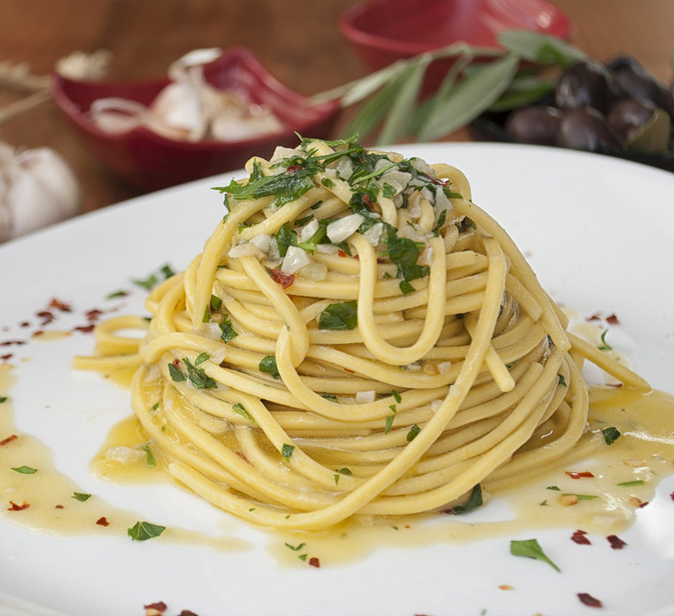

Aglio Olio

Aglio Olio Recipe
Aglio Olio is my staple dish. Although it’s a very simple dish, it tastes incredible if done right.
It is also a very versatile and creative dish, where you can add 1-2 extra ingredients (optional) to tweak the taste, depending on your mood, occasion or budget.
Follow these simple instructions and bathe your senses in all its glory
Ingredients
Must Haves:
- 100g Spaghetti
- Garlic (2-3 cloves)
- 1 whole Peperoncino (dried chilli flakes)
- EVO (Extra Virgin Olive Oil)
- Salt
- Water
Optional:
- Parsley
- Capers
- Sun dried tomato
- MSG (choose one)
- Fish sauce (tiny bit)
- Chicken stock
Steps:
"
- Boil 2 Litres of water
- Add 10-20g of salt (0.5-1% salt concentration)
- Finely mince 1 clove of garlic and finely slice 1-2 cloves of garlic
- When the water is boiling, add pasta into the boiling salted water until fully submerged
- Set a timer. Cook the pasta 3 minutes less than suggested (for De Cecco, it is 9 minutes to al-dente, so I set a time for 6 minutes)
- Whilst the pasta is cooking, heat up the pan (medium low heat) and add 7 tablespoon of EVO
- Add the minced and sliced garlic into the pan. Make sure it is very gently sizzling and not browning
- Crush one peperoncino into the pan and garlic
- Take the pan off the heat once you see the garlic is dark yellow. (You messed up if garlic turns brown)
- Add optional ingredients (other than parsley right now into the sauce)
- When 6-minute timer ends, add the pasta into the pan with EVO, garlic and dried chilli flakes using a tong/chopstick/pasta spoon. DO NOT throw the pasta water away.
- Put the pan with pasta back on the heat and turn it up to max power.
- Add a ladle (150ml) of pasta water into the pan and cook the pasta with the sauce for another 2 minutes with the heat on. Keep adding the water until you get the thick saucy (buttery) consistency. If the pan is spitting, it means that there isn’t enough water.
- Make sure you keep tasting the sauce whilst it’s cooking to adjust saltiness of the sauce. If it is too salty, add more plain water.
- After 2 minutes of cooking the pasta in the sauce, turn off the heat and keep stirring and tossing the pasta until you get the right sauce consistency (not too thick or watery).
- Add 2 Tablespoons of EVO into the sauce and add finely chopped parsley (optional). Stir everything together one last time
- Serve the pasta with the tongs onto the plate by lifting and twisting the spaghetti and add the remaining sauce on top of the spaghetti.
- Enjoy with a glass of dry white wine!